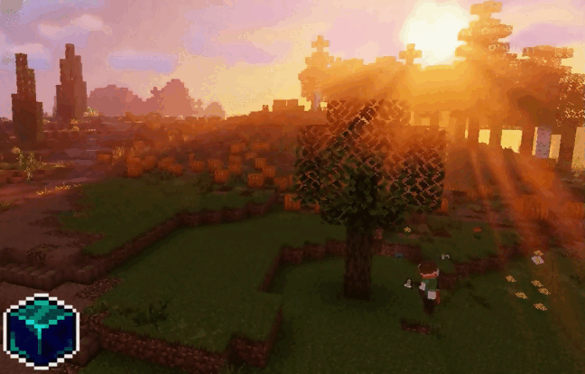

Изменение физики
На сервере UniOn мы постоянно стремимся к тому, чтобы игровой процесс был как можно более реалистичным и захватывающим. Одно из наших последних изменений касается физики рубки деревьев. Теперь, когда вы сломаете нижний блок дерева топором, оно будет полностью падать на землю, точно так же, как это происходит в реальной жизни. Постепенно листва будет исчезать, а на земле останется лежащее бревно, готовое к дальнейшей обработке. Это изменение не только добавляет реализма в игру, но и делает процесс рубки деревьев более увлекательным и интересным. Погрузитесь в атмосферу приключений с улучшенной физикой деревьев на сервере UniOn!